在《基于JavaScript敏捷测试（上篇）》中我们介绍了许多单元测试和TDD的内容，本篇中将介绍如何在团队中快速搭建API测试和消费者驱动的契约测试框架。
JavaScript API测试
API测试类型和特点
单元测试侧重于函数的内部逻辑实现，而API测试侧重于外部集成需求。从API提供方类型区分，包括Public API提供或者第三方提供API服务的情况，和同一项目的项目代码前后端分离，后端暴露接口，前端消费后端提供的数据，它们之间通过REST接口通信的情况。不管是哪种，保证提供的API提供的服务是可用的都是必不可少需要测试的内容。
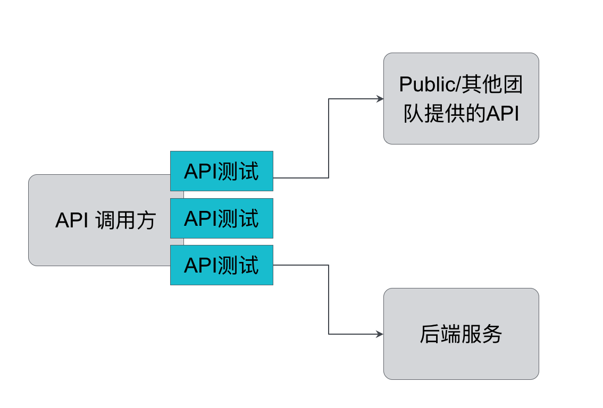
API测试方式
在具体测试时，针对API的测试方式大体可以分为两种：使用工具测试API和使用代码测试API。当然，一些好的测试工具同时也支持写一些自定义的code来帮助验证API返回值是否正确等。同样，下面也列出了一些简单易上手的开源API工具和框架。
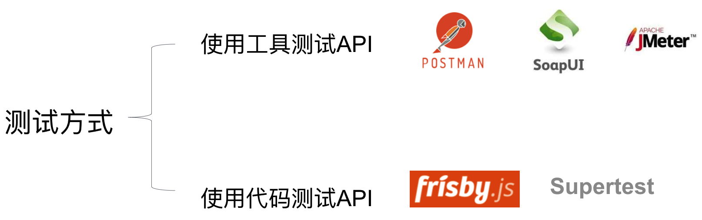
API测试工具
当你的团队需要用最小的成本快速验证服务时候选择这种方式绝对是第一选择。
Postman 是一个在Chrome中使用的REST客户端插件，通过Postman，你可以创建请求并且分析服务器端返回的信息。这个工具在开发新的API或者实现对于已有API的客户端访问代码时非常有用。通过使用Postman，你可以查看历史调用记录，并且可以非常友好的编辑测试数据去测试API在不同请求下的返回。同时，虽然不鼓励录屏式的测试方法，但是Postman提供了一系列的拓展，能允许使用者将它作为跑测试的工具。 有以下特点：
- 使用简单，方便
- 轻量级
- 用户体验好
- 可使用newman 集成CI/CD
SoapUI 是一个开源的，跨平台的测试工具。它支持功能测试、回归测试以及SOAP和REST web服务的负载测试并配备了一个易于使用的图形界面，并支持行业领先的技术和标准，以模拟和鼓励web服务的行为。有以下特点：
- 功能丰富
- 容易集成
- 模拟真实的Service
- 测试自动化
- 使用麻烦
API测试框架
通过编写代码的方式进行API测试能够最大程度帮团队自动化回归测试，验证服务的正确性，同时帮助自定义对API的验证，让团队尽早发现服务中存在的问题。
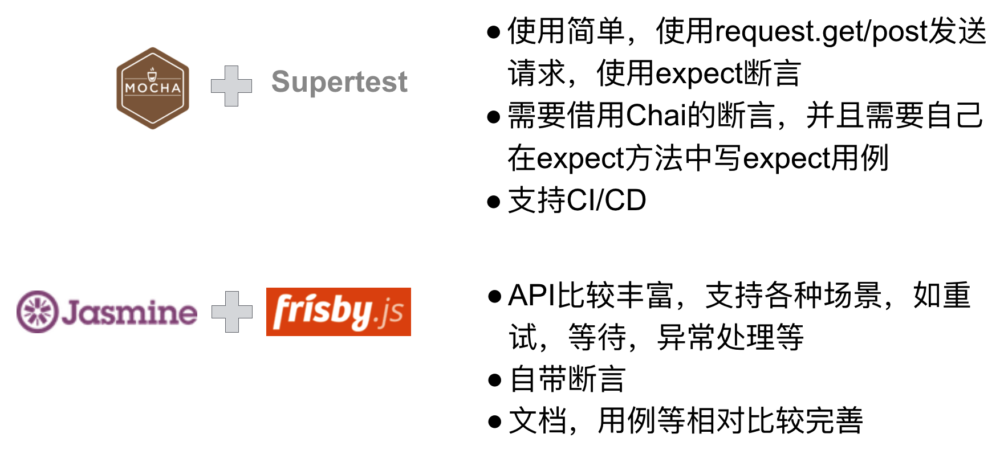
JavaScript 契约测试 与 ATDD
ATDD的概念和流程
ATDD: 验收测试驱动开发(Acceptance Test Driven Development）
前文谈论的TDD更多的是从开发者的角度针对小的功能单元进行测试驱动开发，其实还存在另外一种角度，从客户的角度出发，针对客户的验收标准来测试驱动产品的开发，也就是ATDD，帮助开发人员和测试人员在实施之前了解客户的需求，并允许客户能够以自己的域语言交谈。这两种角度共同保证最终的产品是符合客户需要的正确的产品。
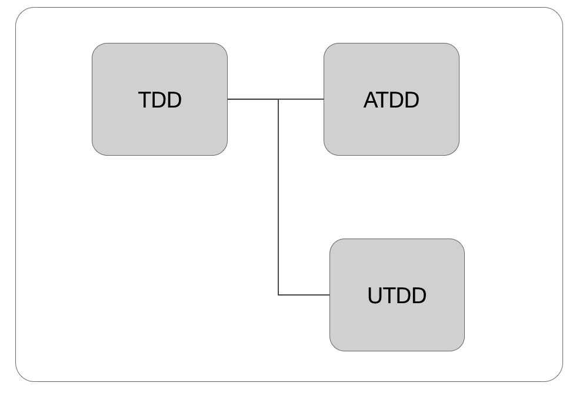
ATDD工作流程如下图所示，首先由开发团队和客户讨论出具体的验收标准，而后提取出具体可验收的验收测试，开发人员以此作为Guide line开发产品代码，完成最后的可交付产品。整个过程最重要的特点是强调关注于业务价值且任何一个功能都有清晰的功能完成的标志 – 即验收标准。
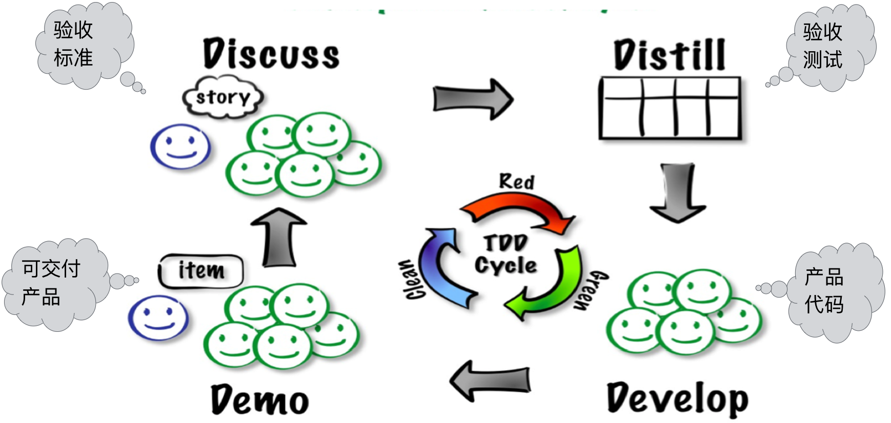
契约测试概念
JavaScript契约测试其实从严格意义上来讲也是API测试的一种，是为了测试与其他团队合作时，其他团队提供服务的是否符合使用者要求的一种测试。契约测试可能会涉及到一些概念如下：
Consumer: Service的使用者，向provider发起HTTP请求来获取数据；
Provider: Service的提供者，接受consumer的HTTP请求并返回数据；
Contract: 契约，一种定义在consumer与provider之间的交互方式；
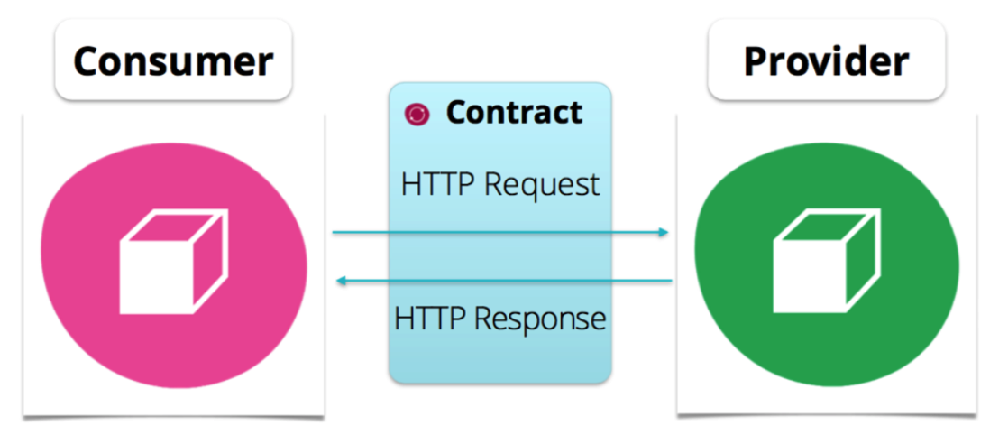
契约测试的使用场景有很多，其中最为典型的一种便是在一个服务被多个使用者调用的时候，保证service的修改不会对其他的使用者造成影响，若造成了改变也能立刻发现定位问题。这种场景在微服务越来越流行的当下就更加容易出现，微服务为了实现有效的拆分应用，实现敏捷开发和部署的目的，要求我们把服务拆分尽量小的单位。其他团队所提供的API是否能够持续而稳定的提供正确的服务，则是我们更要关注的重点。
消费者驱动的契约测试
契约测试中的契约提供方可以有两种选择，由API开发团队（Provider）提供或API使用团队(Consumer)提供。那在这里更加推荐的是由Consumer提供契约，即为消费者驱动的契约测试(Consumer Driven Contract Testing)。
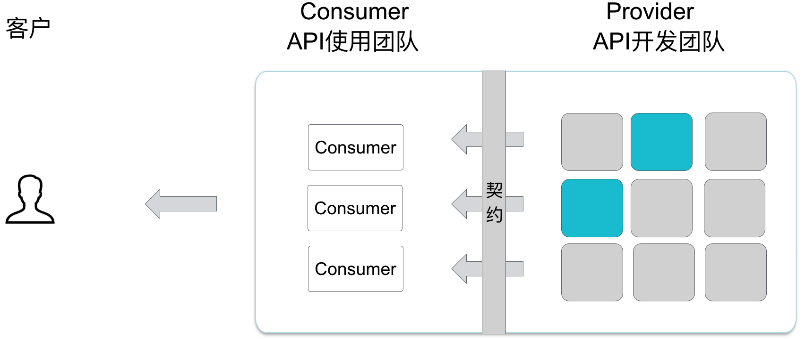
试想一种场景，假如当前项目有一个复杂的业务，Provider团队根据自己对业务的理解，开发出一套service给Consumer使用并开发前端，最终提供给客户交付时，客户看到后觉得并不是自己想要的效果，需要多加一个字段，那么这个需求再次提给Consumer团队响应，最后再次Provider团队要更改自己的service。整个过程非常的长，尤其在这种跨团队的协作时，对于复杂的业务只有Consumer对业务是最为理解的，因为他们是距离客户最近的团队，每天与客户进行交付验证，他们应该是最了解客户真实业务需求的团队，整个过程以Consumer的视角来设计针对外部服务的契约测试。所以真正的契约由Consumer团队提供，只有这样才能最大程度的避免反复的修改。
有了契约存在于两个团队之间，也能帮助解决开发过程中责任链混乱的情况，当客户在验证时发现服务挂了无法访问，可以优先查看契约测试是否挂了，如果挂了，则说明问题出现在提供的服务上。契约测试作为一种验证的方式，也可以帮助我们在API部署前优先验证提供服务是否正确，而不是部署到hign region后才发现问题。
在项目中使用消费者驱动的契约测试的具体操作流程如下图：
- Consumer端提供Mock服务来模拟Provider并生成Contract文件。
- Provider端拿到Contract以来验证Provider的服务。
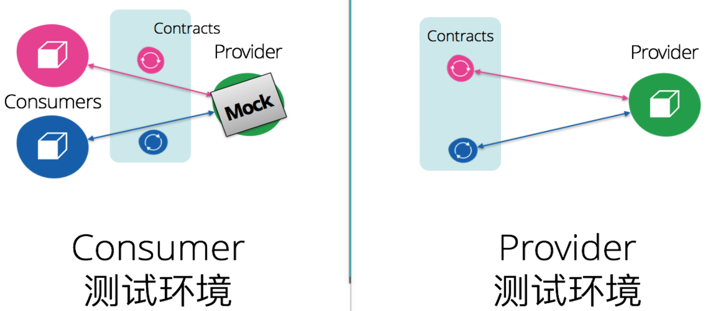
其实，消费者驱动的契约测试本质上是一种技术和态度，强调的是团队间合作开发时良好的沟通方式，团队间良好的沟通和文档都可以作为契约约束团队间的交互方式。但是很多时候，我们还是喜欢把具体的思想通过工具来落实，所以接下来就介绍一款契约测试的工具 – Pact。
Pact
Pact的具体使用流程如下：
Consumer团队
- 启动pact-mock-service
- 发送Http request，Pact拦截住此请求并发给Mock service
- Mock service根据定义好的交互方式返回结果并生成pact契约文件
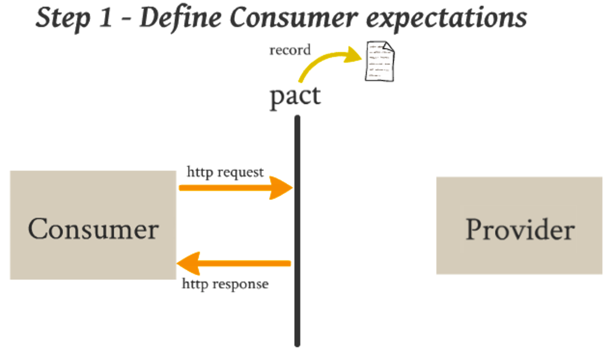
Provider团队
- 实时获取pact契约文件
- 使用pact契约文件验证API service
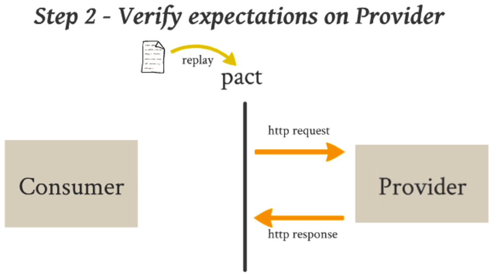
Pact的具体工作流程如下图所示，ConsumerA编写测试定义期望的服务request和response，与此同时生成契约文件，此文件可以Publish到Pact Broker或其他地方，甚至也可以直接传给Provider团队。Consumer此时可以继续以此测试驱动开发具体的实现代码。与此同时，Provider拿到契约文件后，可以进行验证并驱动API的开发，直到契约测试Pass。此时如果更改实现代码时不小心修改到另外一个使用同一服务的ConsumerB，Provider也能在部署前立刻了解到这个信息，及时进行沟通解决。多个团队完成整个操作后，将各自实现代码部署到hign region后，此时的版本应该是满足基本契约要求的服务。整个过程中多个团队可以并行协作，同时开发，加快了开发交付效率。
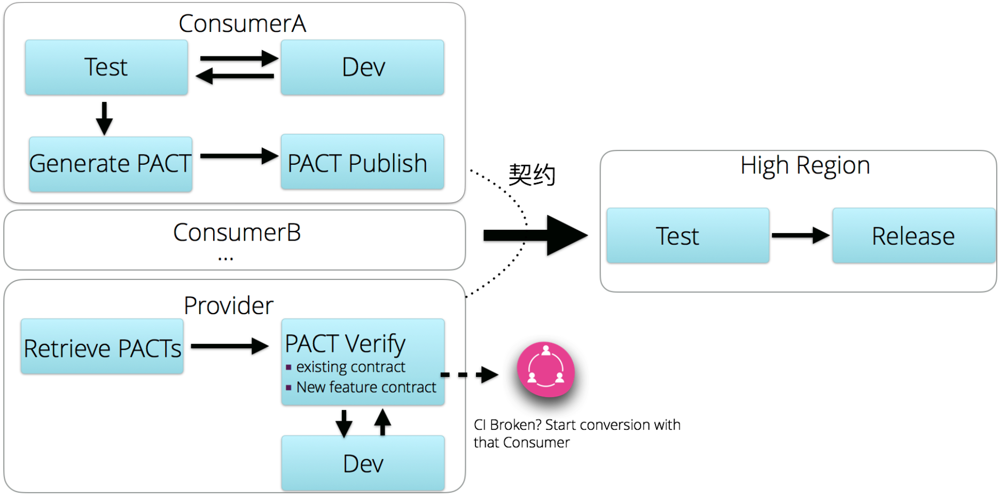
后续关于JavaScript Web功能测试内容，请见《基于JavaScript敏捷测试（下篇）》